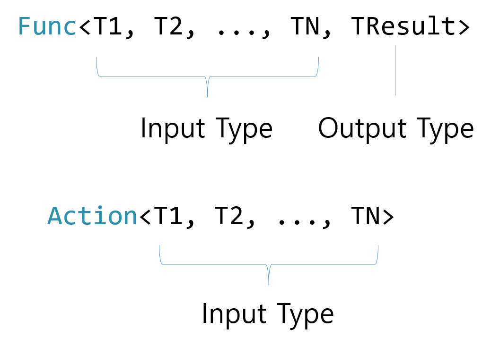

class: center, middle # Chapter 7. First class functions, lambda, delegate --- # First class functions 함수를 일반 오브젝트처럼 취급하자! Why not? --- # First class functions <img src="https://live3.namuwikiusercontent.com/87/872f372fcd5460278c71a34e02b80656bb4198d591ceb72c17bdeb262c6d8290.png" width="800"> --- # 함수에 대한 레퍼런스를 가져와 봅시다 ```csharp public class Program { public static int Add(int a, int b) { return a + b; } static void Main() { var myFunction = Add; Console.WriteLine(myFunction(1, 2)); } } ``` --- # 좀 더 간편하게 ```csharp public class Program { static void Main() { var myFunction = (a, b) => a + b; // *************** // lambda (anonymous function) Console.WrtieLine(myFunction(1, 2)); } } ``` --- # 잠깐... 람다식이란? C#의 "이름 없는 함수" ```csharp var myFunction = (a, b) => { return a + b; } var myFunction = (a, b) => a + b; ``` --- # 함수에 대한 레퍼런스 받기 ```csharp var myFunction = (a, b) => a + b; var anotherFunction = myFunction; ``` --- # 그럼 이 함수의 "타입"은 무엇일까? ```csharp Func<int, int, int> myFunction = (a, b) => a + b; Func<int, int, int> anotherFunction = myFunction; ``` 전에 배웠던 Generics이 등장했군요... --- # Func and Action  --- # delegate - 커스텀 함수 타입 정의하기 하지만 코드를 작성하다 보면 Func<int, int, int>를 일일이 치는게 귀찮고 난잡할 수도 있습니다. 그러므로 이것에게 새로운 이름을 지어봅시다. ```csharp class Program { public delegate int CalculatorFunc(int a, int b); static void Main() { CalculatorFunc myFunc = (a, b) => a + b; Console.WriteLine("1 + 1 = " + myFunc(1, 1)); } } ``` --- # 아직 잠깐만... 함수로 할 수 있는 것들이 아직 많이 남았습니다... --- # 함수를 함수에 집어넣기 (?) ```csharp class Program { public int Calculate(Func<int, int, int> func) { return func(2, 3); } } ``` --- # 함수가 함수를 리턴 (?) ```csharp public Func<int, int, int> GetFunction(char symbol) { switch (symbol) { case '+': return (a, b) => a + b; case '-': return (a, b) => a - b; case '*': return (a, b) => a * b; case '/': return (a, b) => a / b; default: return (a, b) => { throw new Exception("Cannot parse operator " + symbol.ToString()); } } } ``` --- # 그건 다 좋은데... 어디다 쓰죠? --- # 난데없는 하스켈 나치들이 등장 <img src="haskellnazi.png" width="500"> --- # Imperative vs Functional Imperative programming (절차지향 프로그래밍) 에서는 기계가 어떻게 문제를 해결할건지 일일이 인간이 차례대로 알려주어야 했지만... ```csharp List<Person> people = new List<Person>() {...}; List<Person> underaged = new List<Person>(); foreach (Person person in people) { if (person.Age < 19) underaged.Add(person); } ``` Functional programming (함수형 프로그래밍) 에서는 인간이 기계에게 문제가 무엇인지 표현해주면 기계가 알아서 실행시켜준다! ```csharp List<Person> people = new List<Person>() {...};; List<Person> underaged = people.Where(p => p.Age < 19).ToList(); ``` --- # LINQ 이러한 함수형 프로그래밍을 가능하게 하는 것이 바로 LINQ (Language-INtegrated Query) 에요! --- # 두 가지 사용 방법 - Query Syntax ```csharp int[] numbers = { 5, 10, 8, 3, 6, 12}; //Query syntax: IEnumerable<int> numQuery1 = from num in numbers where num % 2 == 0 orderby num select num; ``` - Method syntax ```csharp IEnumerable<int> numQuery2 = numbers.Where(num => num % 2 == 0).OrderBy(n => n); ``` 저희는 일단 Method syntax를 기준으로 수업을 진행합니다 --- # IEnumerable<T> : LINQ의 작동 원리 - T[] - List<T> - HashSet<T> - Dictionary<K, V> - 기타... 등의 자료구조 사이의 변환을 수월하게 해줌. 왜? 모두 다 IEnumerable<T>를 상속받았기 때문! --- # 문제 1 1 ~ 100까지의 짝수의 List를 만들어라. 고전적인 방법 ```csharp List<int> list = new List<int>(); for (int i = 1; i <= 100; i += 2) { list.Add(i); } ``` ```csharp List<int> list = new List<int>(); for (int i = 1; i <= 100; i++) { if (i % 2 == 0) list.Add(i); } ``` --- # Enumerable.Range 일단 1 ~ 100까지의 숫자를 만듭니다 ```csharp IEnumerator<int> rangeOfNums = Enuerable.Range(1, 100); ``` --- # Where로 필터링 이렇게 얻은 숫자들의 묶음중에서 짝수만 빼옵니다. ```csharp IEnumerator<int> rangeOfNums = Enuerable.Range(1, 100); IEnumerator<int> evenNums = rangeOfNums.Where(i => i % 2 == 0); ``` 원래 오브젝트 타입: `IEnumerator<A>` 인풋: `Predicate<A> ( = Func<A, bool>)` 아웃풋: `IEnumerator<A>` --- # IEnumerator<T>에서 다시 List<T>로 변환하기 ```csharp IEnumerator<int> rangeOfNums = Enuerable.Range(1, 100); IEnumerator<int> evenNums = rangeOfNums.Where(i => i % 2 == 0); List<int> list = evenNums.ToList(); ``` --- # Solution (한줄로 정리) ---- ```csharp List<int> list = Enumerable.Range(1, 100) .Where(i => i % 2 == 0) .ToList(); ``` --- # 보너스 1 ~ 100까지의 짝수들을 모두 더한 값은? ```csharp int sum = Enumerable.Range(1, 100) .Where(i => i % 2 == 0) .ToList() .Sum(); ``` --- # 보너스 2 1 ~ 100까지의 짝수들을 출력 ```csharp Enumerable.Range(1, 100) .Where(i => i % 2 == 0) .ToList(); .ForEach(Console.WriteLine); ``` # Select IEnumerable<T> -> IEnumerable<U> 로 변환하고 싶을 때 사용 A의 오브젝트들을 B의 오브젝트로 일대일 매핑(mapping)하는 함수. --- # Select의 타입 원래 오브젝트 타입: `IEnumerator<TSource>` 인풋: `Func<TSource, TResult> selector` 아웃픗: `IEnumerator<TResult>` ```csharp var list = Enumerable.Range(1, 50).Select(i => i*2).ToList(); ``` --- # 예제 : FizzBuzz in one line (...) (사실 엄밀히 한 줄이 아니라고 주장할 수도 있지만...) --- # 답 ```csharp public void FizzBuzz() { Enumerable.Range(1, 100) .Select(n => { if (n % 15 == 0) return "FizzBuzz"; else if (n % 5 == 0) return "Buzz"; else if (n % 3 == 0) return "Fizz"; else return n.ToString(); }) .ToList() .ForEach(Console.WriteLine); } ``` 물론 람다 안의 내용물도 줄 수에 포함된다고 주장하면 어쩔수 없지만... --- # SelectMany ```csharp using System; using System.Linq; class Program { static void Main() { // Input. string[] array = { "I" "Love" "LINQ" }; // Convert each string in the string array to a character array. // ... Then combine those character arrays into one. var result = array.SelectMany(element => element.ToCharArray()); // Display letters. foreach (char letter in result) { Console.WriteLine(letter); } } } ``` --- # Take & Skip ```csharp List<int> list = new List<int> {1, 2, 4, 8, 16}; list.Skip(2).Take(2).ForEach(Console.WriteLine); ``` ``` 4 8 ``` --- # Zip ```csharp using System; using System.Linq; class Program { static void Main() { // Two source arrays. var array1 = new int[] { 1, 2, 3, 4, 5 }; var array2 = new int[] { 6, 7, 8, 9, 10 }; // Add elements at each position together. var zip = array1.Zip(array2, (a, b) => (a + b)); // Look at results. foreach (var value in zip) { Console.WriteLine(value); } } } ``` --- # OrderBy ```csharp static void Sample_GroupBy_Lambda() { int[] numbers = { 10, 15, 20, 25, 30, 35 }; var result = numbers.GroupBy(n => (n % 10 == 0)); Debug.WriteLine("GroupBy has created two groups:"); foreach (IGrouping<bool, int> group in result) { if (group.Key == true) Debug.WriteLine("Divisible by 10"); else Debug.WriteLine("Not Divisible by 10"); foreach (int number in group) Debug.WriteLine(number); } } ``` --- # Aggregate ```csharp private static void Sample_Aggregate_Lambda_Simple() { var numbers = new int[] { 1, 2, 3, 4, 5 }; var result = numbers.Aggregate((a, b) => a * b); Debug.WriteLine("Aggregated numbers by multiplication:"); Debug.WriteLine(result); } ``` --- # Anonymous type 람다식을 통해 Anonymous function(이름 없는 함수)를 만드는 것과 비슷하게, **Anonymous type** (이름 없는 타입)을 만들 수 있습니다. ```csharp var v = new { Amount = 108, Message = "Hello" }; Console.WriteLine(v.Amount + v.Message); ``` 이 오브젝트에는 필드만 들어갈 수 있기 때문에, 오브젝트들을 임시로 묶어놓을 때 사용합니다. --- # 이외의 수많은 메서드들 모두 다 다루기에는 시간이 없기 때문에... http://www.dotnetperls.com/linq http://linqsamples.com/ --- # 결론? Praise the lambda! --- # 과제 3: Markov Text Generation Stanford 대학 과제물을 재사용합시다. (Problem 2) http://web.stanford.edu/class/archive/cs/cs106b/cs106b.1136/handouts/090%20Assignment%202.pdf 추가 참고 자료: https://blog.codinghorror.com/markov-and-you/ --- # 스펙 input.txt로 (나중에 카톡방에 올릴) 소설을 올리면... output.txt로 랜덤생성된 텍스트를 내보내면 됨 (콘솔창에도 프린트 바람) --- # 그럼 끝. ## 모두 수고하셨습니다!